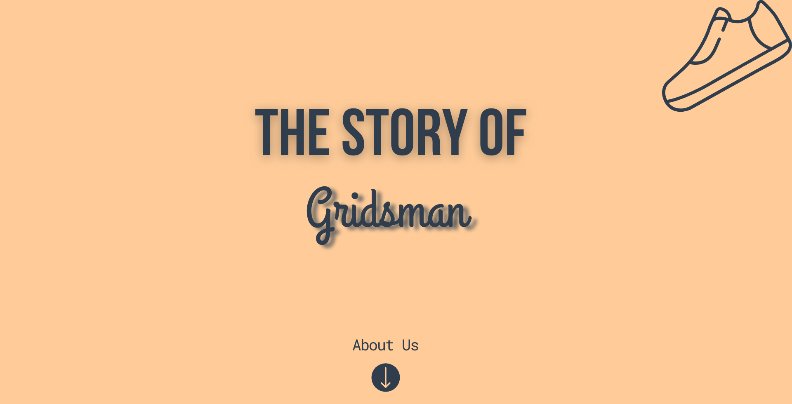
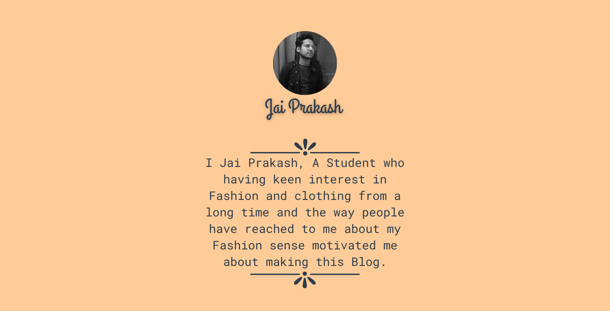

The Story of Gridsman begins with an Idea of Providing Information to People having Day-to-Day life work and can't help with the Grooming part. People who always struggle with their Fashion Sense and don't have the necessary information about what to wear and How to wear.The Idea regulates around the Youth who wants to upbring their confidence and personality by adapting some of the Grooming necessities.

I was also a normal being having no sense of Dressing one day surfing the Internet and Found an Influencer who talks about Fashion and Grooming. That very moment changed my Perspective towards Dressing and from that moment I started Following the Fashion Influencers and community Leaders. It's been more than 2 years now. I'm the part of that community